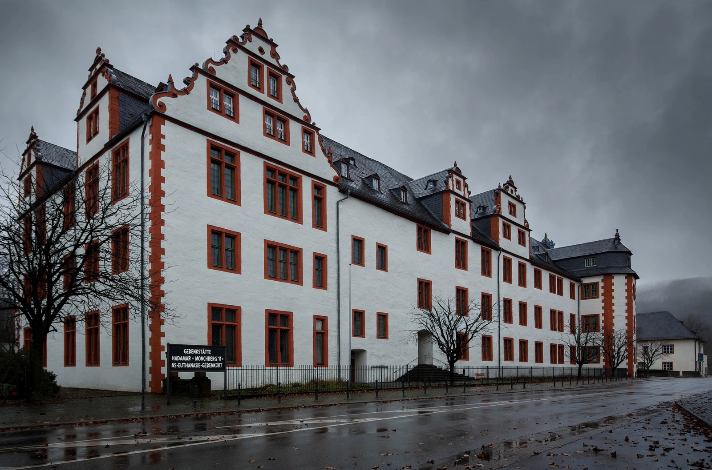

Aktion T4

Aktion T4
| Date | 1939 – 1941 (official phase); decentralised killing continued to 1945 |
|---|---|
| Location | Nazi Germany and annexed territories |
| Headquarters | Tiergartenstraße 4, Berlin |
| Key figures | Philipp Bouhler, Karl Brandt, Viktor Brack |
| Victims | 70,273 in the official programme; estimates of 250,000–300,000 including all "euthanasia" killings |
Aktion T4 (German: [akˈtsi̯oːn teː fiːɐ]) was a campaign of mass murder by involuntary "euthanasia" in Nazi Germany. The name derives from the address of the programme's Berlin headquarters at Tiergartenstraße 4. Under the programme, physicians and administrators selected institutionalised patients — people with physical and intellectual disabilities, mental illnesses, and other conditions deemed "life unworthy of life" (lebensunwertes Leben) — and had them killed, principally in gas chambers at six killing centres. Aktion T4 served as a procedural and personnel model for the subsequent genocide of European Jews.
Origins
The programme grew out of Nazi racial hygiene ideology and earlier sterilisation policy: the 1933 Law for the Prevention of Hereditarily Diseased Offspring had already led to some 400,000 forced sterilisations. A "child euthanasia" programme began in 1939, registering children with severe disabilities for killing by starvation or lethal medication. In October 1939 Adolf Hitler signed a secret authorisation, backdated to 1 September 1939 — the day the war began — empowering his Chancellery chief Philipp Bouhler and his physician Karl Brandt to grant a "mercy death" to the incurably ill. The authorisation was never a law, and the programme operated in legal secrecy.
The killing programme
Questionnaires on institutional patients were assessed by expert reviewers who marked life or death without ever seeing the patients. Those selected were transported in grey buses of a front organisation to six centres — Grafeneck, Brandenburg, Hartheim, Sonnenstein, Bernburg, and Hadamar — where they were murdered with carbon monoxide gas and cremated; families received falsified death certificates and ashes. According to the programme's own statistics, 70,273 people were killed in this centralised phase by August 1941.
Protest and official halt
News of the killings spread despite secrecy, provoking rare public protest. Clemens August Graf von Galen, the Catholic Bishop of Münster, denounced the programme in a sermon on 3 August 1941 that was widely circulated, including by Allied leaflet drops. On 24 August 1941 Hitler ordered an official halt to the adult programme. Killing nevertheless continued in decentralised form — by lethal injection, overdose, and starvation in institutions across the Reich — until 1945, and expanded to concentration camp prisoners under the related "14f13" programme. Historians estimate the total number of victims of Nazi "euthanasia" at 250,000 to 300,000.
Aftermath
Many T4 personnel, including Christian Wirth and Franz Stangl, were transferred to Operation Reinhard, where they applied gassing techniques developed under T4 to the extermination of Polish Jews. After the war, some organisers were tried — Viktor Brack was executed following the Doctors' Trial at Nuremberg — but many participating physicians resumed normal careers. A national memorial and information centre at Tiergartenstraße 4 in Berlin opened in 2014.
See also: Scientific racism · Buck v. Bell · The Holocaust · Life unworthy of life